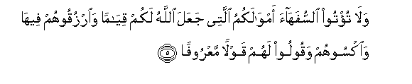
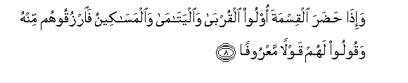
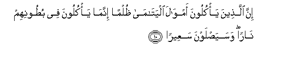

Sacred Texts Islam Index
Hypertext Qur'an Unicode Palmer Pickthall Yusuf Ali English Rodwell
Sūra IV.: Nisāa, or The Women. Index
Previous Next

The Holy Quran, tr. by Yusuf Ali, [1934], at sacred-texts.com
Sūra IV.: Nisāa, or The Women.
Section 1
1. Ya ayyuha alnnasu ittaqoo rabbakumu allathee khalaqakum min nafsin wahidatin wakhalaqa minha zawjaha wabaththa minhuma rijalan katheeran wanisaan waittaqoo Allaha allathee tasaaloona bihi waal-arhama inna Allaha kana AAalaykum raqeeban
1. O mankind! reverence
Your Guardian-Lord,
Who created you
From a single Person,
Created, of like nature,
His mate, and from them twain
Scattered (like seeds)
Countless men and women;—
Reverence God, through Whom
Ye demand your mutual (rights),
And (reverence) the wombs
(That bore you): for God
Ever watches over you.
2. Waatoo alyatama amwalahum wala tatabaddaloo alkhabeetha bialttayyibi wala ta/kuloo amwalahum ila amwalikum innahu kana hooban kabeeran
2. To orphans restore their property
(When they reach their age),
Nor substitute (your) worthless things
For (their) good ones; and devour not
Their substance (by mixing it up)
With your own. For this is
I ndeed a great sin.
3. Wa-in khiftum alla tuqsitoo fee alyatama fainkihoo ma taba lakum mina alnnisa-i mathna wathulatha warubaAAa fa-in khiftum alla taAAdiloo fawahidatan aw ma malakat aymanukum thalika adna alla taAAooloo
3. If ye fear that ye shall not
Be able to deal justly
With the orphans,
Marry women of your choice,
Two, or three, or four;
But if ye fear that ye shall not
Be able to deal justly (with them),
Then only one, or (a captive)
That your right hands possess.
That will be more suitable,
To prevent you
From doing injustice.
4. Waatoo alnnisaa saduqatihinna nihlatan fa-in tibna lakum AAan shay-in minhu nafsan fakuloohu hanee-an maree-an
4. And give the women
(On marriage) their dower
As a free gift; but if they,
Of their own good pleasure,
Remit any part of it to you,
Take it and enjoy it
With right good cheer.

5. Wala tu/too alssufahaa amwalakumu allatee jaAAala Allahu lakum qiyaman waorzuqoohum feeha waoksoohum waqooloo lahum qawlan maAAroofan
5. To those weak of understanding
Make not over your property,
Which God hath made
A means of support for you,
But feed and clothe them
Therewith, and speak to them
Words of kindness and justice.
6. Waibtaloo alyatama hatta itha balaghoo alnnikaha fa-in anastum minhum rushdan faidfaAAoo ilayhim amwalahum wala ta/kulooha israfan wabidaran an yakbaroo waman kana ghaniyyan falyastaAAfif waman kana faqeeran falya/kul bialmaAAroofi fa-itha dafaAAtum ilayhim amwalahum faashhidoo AAalayhim wakafa biAllahi haseeban
6. Make trial of orphans
Until they reach the age
Of marriage; if then ye find
Sound judgment in them,
Release their property to them;
But consume it not wastefully,
Nor in haste against their growing up.
If the guardian is well-off,
Let him claim no remuneration,
But if he is poor, let him
Have for himself what is
Just and reasonable.
When ye release their property
To them, take witnesses
In their presence:
But all-sufficient
Is God in taking account.
7. Lilrrijali naseebun mimma taraka alwalidani waal-aqraboona walilnnisa-i naseebun mimma taraka alwalidani waal-aqraboona mimma qalla minhu aw kathura naseeban mafroodan
7. From what is left by parents
And those nearest relateds,
There is a share for men
And a share for women,
Whether the property be small
Or large,—a determinate share.

8. Wa-itha hadara alqismata oloo alqurba waalyatama waalmasakeenu faorzuqoohum minhu waqooloo lahum qawlan maAAroofan
8. But if at the time of division
Other relatives, or orphans,
Or poor, are present,
Feed them out of the (property),
And speak to them
Words of kindness and justice.
9. Walyakhsha allatheena law tarakoo min khalfihim thurriyyatan diAAafan khafoo AAalayhim falyattaqoo Allaha walyaqooloo qawlan sadeedan
9. Let those (disposing of an estate)
Have the same fear in their minds
As they would have for their own
If they had left a helpless family behind:
Let them fear God, and speak
Words of appropriate (comfort),

10. Inna allatheena ya/kuloona amwala alyatama thulman innama ya/kuloona fee butoonihim naran wasayaslawna saAAeeran
10. Those who unjustly
Eat up the property
Of orphans, eat up
A Fire into their own
Bodies: they will soon
Be enduring a blazing Fire!